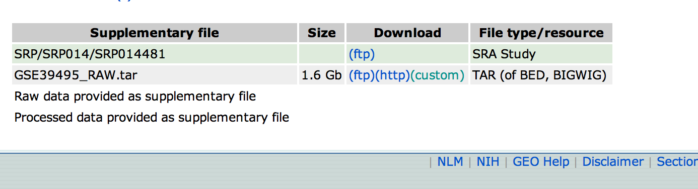

Your group assignment.
The purpose of this group project is to learn, collaborate and practice presenting your research. Some of you may learn python, some may learn some biology, and some may learn how to teach others.
The set-up:
A. Take a look at the sets of data available from the recent ENCODE dump: http://www.ncbi.nlm.nih.gov/geo/browse/?view=series&tax=9606&suppl=SRA%20Study&submitter=17528&zsort=date&display=20 . Pose a biological question that you will be able to address with this data. Some examples:
- Are there gene expression differences in HeLa cells versus MCF-7 cells that give clues as to the origin of these cell lines?
- Are nucleosome positions affected by gene expression levels?
- How well do H3K4me3 marks in one cell type predict gene expression levels in a related but different cell type?
Note that this is purposefully open-ended. You can get away with doing very little work, or you can really impress us by posing a truly interesting question that falls out of the ENCODE data. Part of the challenge is to think up a good question!
The procedure:
1. Download at least two SRA Study/Experiment files from the list of ENCODE studies. (Click on the leftmost column to go to the description page for each sample set.) You can choose two samples from the same set, or mix and match as you see fit. Note that the links to the actual data are at the bottom of the page describing any single sample
2. Using fastq-dump on the server at /home/jdavistu/fastq-dump (or downloaded from http://www.ncbi.nlm.nih.gov/Traces/sra/?view=software ), convert the file to a fastq file.
3. Using the technique learned in the Bowtie homework assignment, map the reads from each of the two samples chosen to the transcriptome (for RNA-seq) or the whole genome (ChIP-seq).
** For the whole-genome mapping, use /home/jdavistu/indices/hg19 instead of /home/jdavistu/indices/hg19_transcriptome in the bowtie command. **
4. Use the mapped data to address the biological question you posed in (A).
5. Prepare a presentation (30 minutes) for Monday to present your findings to the class. You should ensure that:
- Everyone has a chance to speak.
- The biological question is presented.
- The computational process you went through is presented. (For example, you may have generated a table of gene expression values from the mapped reads, with tag counts per RefSeq gene, normalized to RPKM. Explain how and why you did that.)
- You explain whether or not you successfully answered the question you posed.
- You explain any future studies that will be necessary to explore your question further.
Post-processing:
Each group should come up with a clever acronym to name their project, and include it in the slides.
Each group should email us a copy of the slides (PDF), along with the names of the group members. (These slides will be viewed by PIs without your narration, so try to be clear in pictures alone without being verbose...a challenge, to be sure.)
Any commentary about how the group-work went and whether all contributed equally can be sent via email to us separately.
Group Assignments:
1. Kai Kuan Nathan
2. Anu Dylan Michael
3. Isaac Leen Olga
4. James Jason Ryan